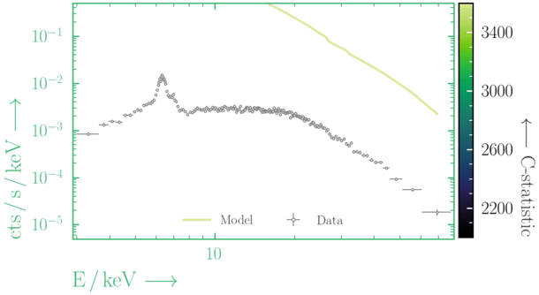
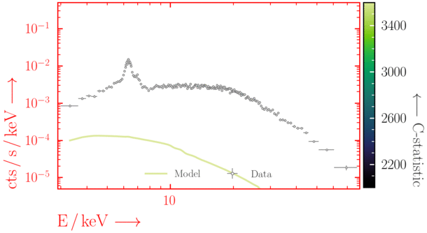

This session aims to provide a sufficient background with
Xspec/PyXspec
and/or Sherpa to complete the remaining BXA tutorial exercises. For a complete and in-depth
understanding of the features available in these software packages, see the useful links for the excellent online material provided by each team.
Key objectives:
- Load a spectrum and fit a model to it in Xspec, PyXspec and/or Sherpa
- Manually explore a parameter space and avoid local minima
- Get to grips with plotting in Xspec, PyXspec and Sherpa
Getting started
If you don't have your own, download the following NuSTAR spectral files from here. The zip file contains:- Source spectrum (binned with
ftgrouppha grouptype=bmin groupscale=5):nustar_src.pha - Response:
nustar.rmf - Effective area:
nustar.arf - Background spectrum:
nustar_bkg.pha
- For interactive mode:
- Xspec:
$ xspec - PyXspec:
$ ipython from xspec import *
- Sherpa:
$ sherpa
- Xspec:
- For scripting:
- Xspec:
$ xspec - xspec_script.tclRemember to includeexitorquitat the end of the script! - PyXspec:
$ python3 pyxspec_script.py - Sherpa:
$ sherpa sherpa_script.py
- Xspec:
- The majority of the exercises in this tutorial use the Wstat fit statistic during fitting, which adds a background contribution to the source model in each channel. If an insufficient fraction of background bins contain an insufficient number of counts, using Wstat can lead to biased results. In such scenarios, the background is under-estimated, leading to the source flux being over-estimated. For more details on this bias, see the blog post by Giacomo Vianello here
- To avoid this issue, it is beneficial to bin the source + background spectrum enough so that the background (which is automatically binned to match the source + background spectrum in e.g., Xspec) spectral bins contain enough counts. Some popular options for binning using the ftool
ftgroupphainclude:grouptype=opt: uses the optimal binning scheme of Kaastra & Bleeker (2016; A&A 587, A151).grouptype=bmin: binning to have a minimum number of counts in each background bin.grouptype=min: binning to have a minimum number of counts in each source + background spectrum bin.
- The solutions for these exercises were produced using
bmin=5with the followingftgroupphascript (make sure to be inside the directory containing the spectral files):ftgrouppha grouptype=bmin groupscale=5 clobber=yes \ infile=nustar_src.pha \ backfile=nustar_bkg.pha \ outfile=nustar_src_bmin5.pha
- If using a binned spectrum in a fit (i.e. there is no background model), there is often no single option that is ideal for all scenarios. It is recommended to try a variety of different methods to ensure biases are minimal in a fit.
Before starting, the following commands are required:
- Set the x-axis units (e.g., instrument channels or energy):
- Xspec:
setplot energy - PyXspec:
Plot.xAxis = "keV"# or "channel" - Sherpa:
set_analysis("ener")# or "chan"
- Xspec:
- Plot device (Xspec & PyXspec only):
- Xspec:
- Set the plot device:
cpd /xw
- Set the plot device:
- PyXspec:
- No plot device (useful to avoid plot window pop-ups):
Plot.device = "/null" - Set the plot device:
Plot.device = "/xw"
- No plot device (useful to avoid plot window pop-ups):
- Xspec:
- Load spectra:
- Ignore ineffective energies:
There are a number of useful settings for plotting the data in Xspec & PyXspec. For a full list, see here. Some useful examples for these exercises include:
Interactive
In Xspec, you can either use
You can always view the full list of PLT commands being run by Xspec if you increase the verbosity to
Saving the data to be plotted by yourself can be done with the following:
- Xspec:
setplot area/noarea:
For plots, divide the observed data by the response effective areasetplot add/noadd:
Show all additive model components in plotssetplot background/nobackground:
Automatically plot the background in the same plot as the sourcesetplot rebin X Y N:
Adjacent bins are combined in datasetNuntil either: (1) the significance of the combined bins is ≥ X σ or (2)Ybins have been combined. To undo on all datasets, usesetplot rebin 0 1 -1.setplot command range x xmin xmax
To append any IPLOT commands to a list that is executed when the user typesplot ....setplot delete all
To delete all IPLOT commands from the current list.
- PyXspec (for command descriptions see above, for command documentation see here):
Plot.area=True/FalsePlot.add=True/FalsePlot.background=True/FalsePlot.setRebin(X, Y, N)Plot.addCommand("range x xmin xmax")Plot.commands = ()
- Xspec (note you can try
counts/data/lcountsin place ofldata):
setplot rebin 2 1000 -1 plot ldata
- PyXspec (note you can try
"counts"/"data"/"lcounts"in place of"ldata"):
Plot.setRebin(2, 1000) Plot("ldata") - Sherpa (note you can try
"counts"in place of"rate"):
group_snr(1, 2.) subtract(1) set_analysis(1, "ener", "rate") plot_data(xlog=True, ylog=True)
Interactive PLT (Xspec only)
In Xspec, you can either use plot or iplot to produce plots. plot will make the plot and return the user to the Xspec prompt, whereas iplot starts the interactive plotting interface which can be used to edit a plot.
You can always view the full list of PLT commands being run by Xspec if you increase the verbosity to
chatter 25 before typing iplot. This is useful for determining the plotting element numbers for different colours, etc. Here are some basic commands for using the interactive PLT interface:
LAB title text: Change the title of the plot to "text"time off: Remove the time label in the bottom right of the plotCS N: Change the character size for text on the plot (values of 0-5 are allowed, 1 is default)viewport xlo ylo xhi yhi: Change the location of the plot in the plotting windowLAB y ylabel: Change the y axis labelLAB x xlabel: Change the x axis labelCOL 0 on 1..2: Change the colour of elements 1..2 to 0 (i.e. black - for all available colours, see Fig. 5.1 here)LW 5 on 1..2: Change the line width of elements 1-2 to 5 (values can be ≥ 1)LAB 5 POS x y "This text is... \fiITALIC\fn NORMAL\uSUPERSCRIPT\d\dSUBSCRIPT": create a text label.- Greek alphabet in order (use
\Gfor capitals):
\ga \gb \gg \gd \ge \gz \gy \gh \gi \gk \gl \gm \gn \gc, \go, \gp, \gr \gs \gt \gu \gf \gx \gq \gw
- Greek alphabet in order (use
LAB 5 COL 4 CS 1.4: Change the colour of label 5 to 4 (i.e. blue) and change the character size to 1.4
plot. To interact with this list of commands:
setplot command ...: Type this followed by any interactivePLTcommand to append the command to the listsetplot list: Show the currently appended plot commandssetplot delete all: Remove all plot commands from the list
wdata filename.dat inside interactive PLT (or use setplot command wdata filename.dat with Xspec plot) to save everything being plotted by Xspec to filename.dat (make sure to keep track of the order of the columns!). This file can then be read in with e.g., pandas to plot in Python.
Saving the data to be plotted by yourself can be done with the following:
- Xspec:
setplot rebin 2 1000 -1 setplot command wdata ldata_plot.dat plot ldata exit
Then the data can be read in to e.g.,pandaswith:import pandas as pd df = pd.read_csv("ldata_plot.dat", skiprows=3, delim_whitespace=True, names=["EkeV", "EkeV_err", "data", "data_err"]) - PyXspec:
import pandas as pd Plot.setRebin(2, 1000) EkeV = Plot.x() EkeV_err = Plot.xErr() data = Plot.y() data_err = Plot.yErr() df = pd.DataFrame(data={"EkeV": EkeV, "EkeV_err": EkeV_err, "data": data, "data_err": data_err}) df.to_csv("csv_filename.csv", index=False) - Sherpa:
import pandas as pd group_snr(1, 2.) subtract(1) set_analysis(0, "ener", "rate") srcdata = get_data_plot(1) EkeV = srcdata.x EkeV_err = srcdata.xerr data = srcdata.y data_err = srcdata.yerr df = pd.DataFrame(data={"EkeV": EkeV, "EkeV_err": EkeV_err, "data": data, "data_err": data_err}) df.to_csv("csv_filename.csv", index=False)
import matplotlib.pyplot as plt
fig, ax = plt.subplots()
err_kwargs = {}
err_kwargs["fmt"] = "o"
err_kwargs["label"] = "Folded data"
err_kwargs["mec"] = "royalblue"
err_kwargs["ecolor"] = "royalblue"
err_kwargs["mfc"] = "white"
err_kwargs["markersize"] = 6.
err_kwargs["markeredgewidth"] = 1.
err_kwargs["linewidth"] = 1.
err_kwargs["capthick"] = 0.
err_kwargs["capsize"] = 0.
err_kwargs["zorder"] = -1.
ax.errorbar(df["EkeV"], df["data"], xerr=df["EkeV_err"], yerr=df["data_err"], **err_kwargs)
ax.set_xscale("log")
ax.set_yscale("log")
plt.show()
fig.savefig("folded_data.png")
The count rate that we detect and plot as a spectrum with e.g.,
Forward-folding is the process creating a model from some parameters, and then convolving it with the detector response and effective area. The convolved version of the model is then compared with the convolved data by some statistical measure, and is repeated until the parameters are optimised according to the statistical measure.

plot ldata in Xspec is not the true spectrum,
but a form of the true data that has been folded with all the effects arising from detecting the source.
This is why fitting is done with forward-folding.
Forward-folding is the process creating a model from some parameters, and then convolving it with the detector response and effective area. The convolved version of the model is then compared with the convolved data by some statistical measure, and is repeated until the parameters are optimised according to the statistical measure.
- Set the fit statistic (here we use modified Poisson statistics, which are appropriate in relatively low counts - see figure below):
- Xspec:
set stat cstat - PyXspec:
Fit.statMethod = "cstat" - Sherpa:
set_stat("wstat")
- Xspec:
- (Optional) turn off the interruption whilst fitting (Xspec & PyXspec only):
Here the Poisson and Gaussian statistics only become comparable in the high-count regime.
powerlaw model and set the model parameter values:
- Create the model:
- Xspec:
model powerlaw - PyXspec:
mymod = Model("powerlaw") - Sherpa:
mymod = xspowerlaw.mypow set_source(1, mymod)
xsis used to indicate Xspec models, and get_default_id() can be used to show the id that is used if an id is not specified
- Xspec:
- Set the parameter values:
Note the
min,maxparameter bounds are used in the BXA priors and should be set to reasonable values.- Xspec:
newpar 1 1.9, 0.1, -1., -1., 4., 4. newpar 2 1.e-3, 0.1, 1.e-8, 1.e-8, 1., 1.
- PyXspec:
mymod.powerlaw.PhoIndex.values = (1.9, 0.1, -1., -1., 4., 4.) mymod.powerlaw.norm.values = (1.e-3, 0.1, 1.e-8, 1.e-8, 1., 1.)
Or:
AllModels(1)(1).values = 1.9, 0.1, -1., -1., 4., 4. AllModels(1)(2).values = 1.e-3, 0.1, 1.e-8, 1.e-8, 1., 1.
- Xspec:
- Sherpa:
set_par(mypow.phoindex, val=1.9, min=-1., max=4.) set_par(mypow.norm, val=1.e-3, min=1.e-8, max=1.)
- Xspec:
plot ldata del fit
- PyXspec:
Plot("ldata del") Fit.perform() - Sherpa (note if you subtracted the data previously with
subtract, you need to rununsubtractif fitting withwstatorcstat):
plot_fit(xlog=True, ylog=True) fit()
Beware of local minima!
Depending on where you start your fit, the Levenberg-Marquadt algorithm may struggle to find the global minimum (i.e. the true best-fit).In this example, both plots show an example progression for a fit with the Levenberg-Marquadt algorithm in Xspec. The final fit in the left panel is the global minimum, whereas the right hand plot is a local minimum. Local minima can be quite hard to identify visually and even masquerade as a very good fit. A quick way to initially check is to look for physically-unrealistic parameter values from a fit. The more thorough way to combat this issue whilst using Levenberg-Marquadt is to try to explore the parameter space more fully - e.g., with
steppar in Xspec/PyXspec or by manually starting the fit from different initial parameter values.


Have you found the best-fit parameter values for your
powerlaw fit? Try starting the parameters at different initial values before fitting to check.
Plotting a model with data
When plotting a model with data, there are a few options inside Xspec, PyXspec and Sherpa:- Folded units:
See the commands from Exercise 0.1 - Unfolded units:
Note that plotting in unfolded units is useful to see the possible unconvolved spectrum, but this is model dependent. Changing the model will change the plot.- Xspec:
plot ufspecplot eufspecplot eeufspec
- PyXspec:
Plot("ufspec")Plot("eufspec")Plot("eeufspec")
Note the model y-axis values can be accessed after running the
Plot(...)command with e.g.,mod_data = Plot.model(). - Sherpa:
See Sherpa thread here.
- Xspec:
- Residuals:
- Xspec:
- PyXspec (see equivalent descriptions above):
Plot("residuals")
Plot("ratio")
Plot("delchi")
plot_fit_resid(1)
Plot the data and folded model together with the residuals.plot_fit_ratio(1)
Plot the data and folded model together with the ratio of model to data.plot_fit_delchi(1)
Plot the data and folded model together with the residuals.
- Xspec:
steppar log/nolog parno1 lowerbound1 upperbound1 nsteps log/nolog parno2 lowerbound2 upperbound2 nsteps plot cont
- PyXspec:
Fit.steppar("log/nolog parno1 lowerbound1 upperbound1 nsteps log/nolog parno2 lowerbound2 upperbound2 nsteps") Plot("cont")
Note: you will have to choose the - Sherpa:
See Region Projection in this Sherpa guide.
lowerbound and upperbound in steppar to encompass the parameter values.
Some of the exercises in this tutorial involve simulating spectra. To do this you will need a model, response file (rmf), effective area file (arf) and (optionally) a background spectrum file:
- PyXspec (using
fakeit):mymod = Model("powerlaw") mymod.powerlaw.PhoIndex.values = (1.9, 0.01, -3., -3., 3., 3.) mymod.powerlaw.norm.values = (1.e-3, 0.01, 1.e-8, 1.e-8, 1., 1.) fakeit_kwargs = {} fakeit_kwargs["response"] = "rmf_file_name" fakeit_kwargs["arf"] = "arf_file_name" fakeit_kwargs["background"] = "bkg_file_name" fakeit_kwargs["exposure"] = exposure fakeit_kwargs["correction"] = "1." fakeit_kwargs["backExposure"] = exposure fakeit_kwargs["fileName"] = "output_filename.pha" AllData.fakeit(1, FakeitSettings(**fakeit_kwargs))
- Sherpa (using
fake_pha):mymod = xspowerlaw.mypow set_par(mymod.phoindex, val = 1.9, min = -3., max = 3.) set_par(mymod.norm, val = 1.e-3, min = 1.e-8, max = 1.) load_pha(1, "nustar_src_bmin5.pha") #loading pre-exising source spectrum with rmf, arf & bkg present set_source(1, mymod) fakepha_kwargs = {} fakepha_kwargs["rmf"] = get_rmf() fakepha_kwargs["arf"] = get_arf() fakepha_kwargs["bkg"] = get_bkg() fakepha_kwargs["exposure"] = 30.e3 fake_pha(1, **fakepha_kwargs) save_pha(1, "output_filename.pha", clobber = True)